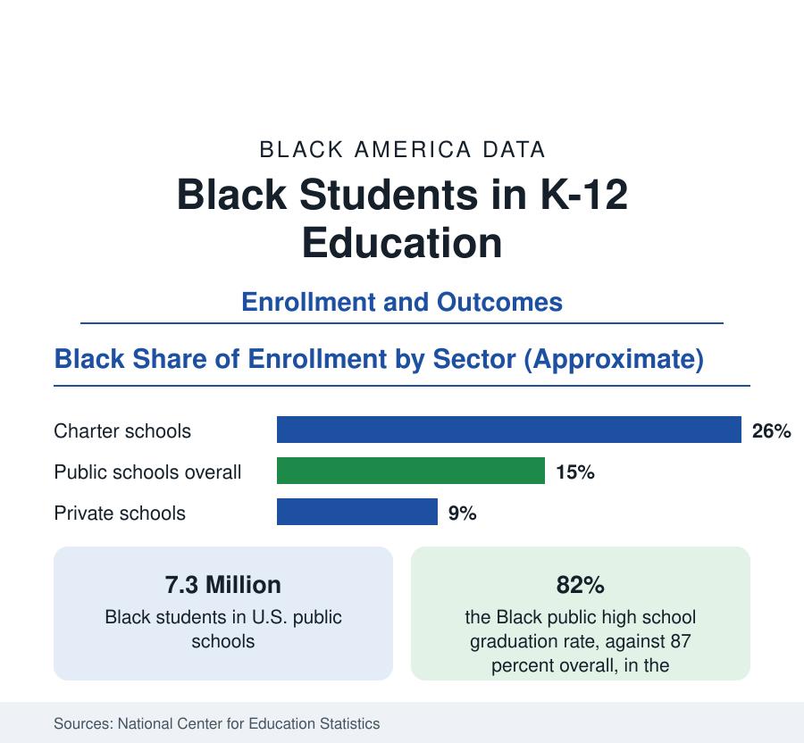

Black Education
Black Students in K-12: Enrollment, Schools, and Measured Outcomes
About 7.3 million Black children attend America's public schools — 15 percent of enrollment — across district, charter, and private systems. The NCES enrollment and outcomes data.

About 7.3 million Black children are enrolled in America's public schools — roughly 15 percent of total public enrollment — with several hundred thousand more in charter schools counted within that system, in private schools, and in home education. Their distribution across school types is distinctive: Black families choose charter schools at rates well above their enrollment share, use private schools below it, and have adopted homeschooling at rates that rose sharply in recent federal household surveys. The outcomes data — test assessments and graduation counts — show a generation of slow convergence interrupted, measurably, in the pandemic years. This article reports the K-12 data.
Where Black Children Learn
The sector shares frame every other figure. Within the public system, Black students are about 26 percent of charter school enrollment — nearly double their overall share — concentrated in the urban charter networks of the Northeast, Midwest, and South, a parental-choice pattern the survey literature associates with dissatisfaction with assigned district schools. Private school enrollment runs at about 9 percent Black, historically anchored by Catholic schools in the older cities and Black independent schools in the South, and constrained by tuition against the income distribution. Homeschooling, long marginal in the Black data, recorded a marked rise in the Census Bureau's pandemic-era household pulse surveys — estimates that vary by instrument but agree on direction — and the retention of some of that increase is now a tracked series. School poverty exposure remains the distribution's heaviest fact: the typical Black public school student attends a school where a majority of students qualify as low-income, at rates the NCES reports at roughly double the exposure of the typical White student.
Measured Achievement: The NAEP Record
The National Assessment of Educational Progress — the federal test administered to representative samples — is the reference series for achievement. Its recent main assessments show Black students scoring on the order of 25 to 30 points below White students on the 500-point scales in reading and mathematics at the tested grades, a gap that narrowed substantially from the 1970s to the 2000s, stalled in the 2010s, and widened in the pandemic-era administrations, when Black students' scores fell further and recovered more slowly amid the era's unequal remote-learning exposure. State assessments tell the same story in their own metrics. The NAEP data also record the distribution's top: Black students at the advanced levels, in gifted programs — where the identification data show Black students referred and placed at rates below their enrollment share — and in Advanced Placement and dual-enrollment courses, where participation has grown faster for Black students than for any other group from a low base.
Graduation and Completion
The graduation series is the outcomes table's improving line. The federal adjusted cohort graduation rate for Black students stands at roughly 82 percent against 87 percent overall — a gap of about five points that was more than double that a generation ago. The state range beneath the average is wide: several states graduate Black students at rates at or above the national overall figure, while the lowest-performing states sit in the low seventies. Dropout rates in the household surveys have fallen correspondingly, to roughly 5 percent among Black young adults, near the overall rate. Completion is where the K-12 system's other data cash out: the diploma is the gate to the college enrollment of the next articles, and its five-point gap is the residue of everything upstream — funding, coursework access, teacher distribution, and the disciplinary data, in which Black students receive suspensions at roughly twice their enrollment share in the federal civil rights data collection.
Reading the K-12 Data
The K-12 profile resolves into a pattern familiar across this reference: outcomes improving across decades on the completion measures, gaps persisting on the proficiency measures, and a distribution of school quality — measured by poverty exposure, teacher experience, and course access — that remains the system's most unequal output. The 7.3 million students in these tables are the population whose later statistics fill this site's college, workforce, and income sections; the K-12 data are where those numbers are made.
The enrollment counts themselves are the foundation series of this section, refreshed with each federal school-year release.
More in Black Education
Black Educational Attainment: High School Parity, the College Gap
About 89 percent of Black adults hold a high school diploma and one in four holds a bachelor's degree or higher — the attainment ladder, the college completion gap, and the generational trend.
Historically Black Colleges and Universities: Enrollment and Degrees
More than 100 HBCUs enroll roughly 290,000 students and award about one in six Black bachelor's degrees — an outsized share from a small sector. The federal education data.
Black College Enrollment: 2.4 Million Students
About 2.4 million Black students are enrolled in American colleges — nearly two-thirds of them women. The NCES enrollment data by sector, level, and trend.
Source: National Center for Education Statistics, Common Core of Data; National Assessment of Educational Progress; EdFacts graduation data.